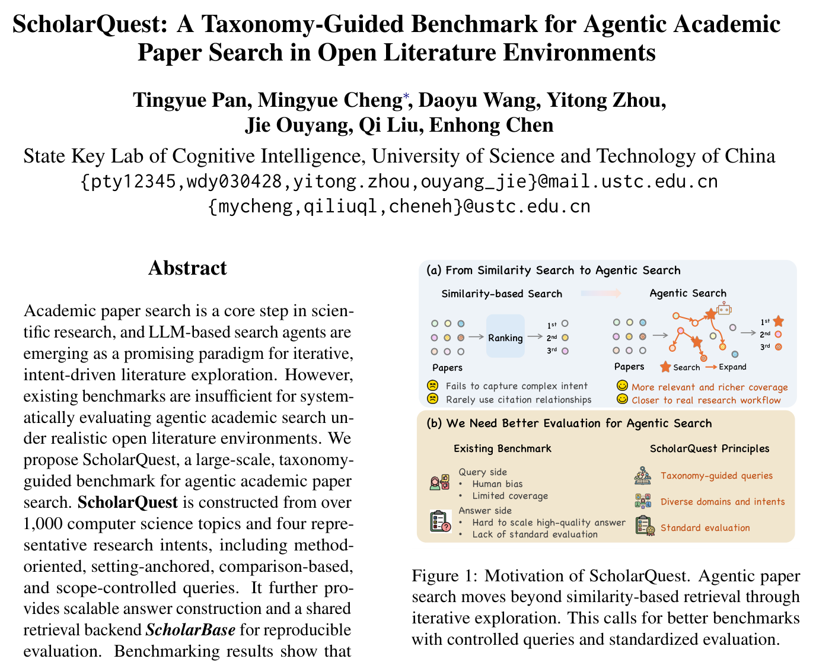
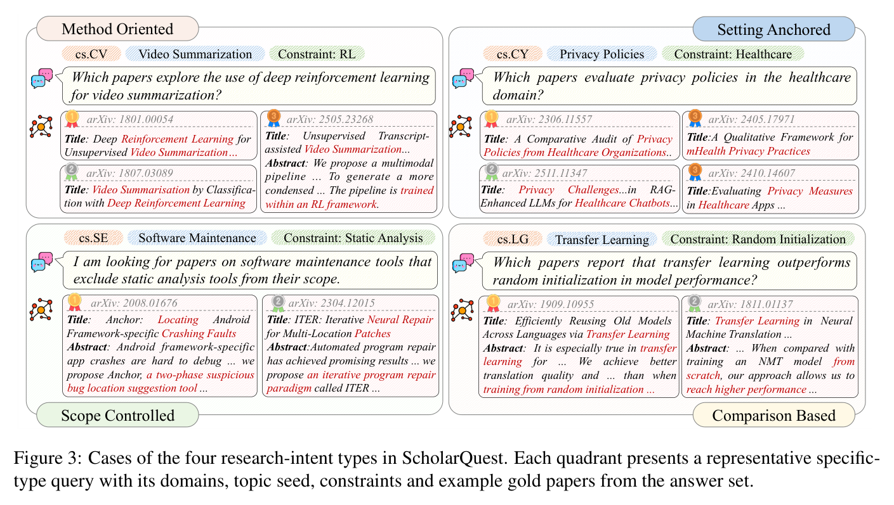
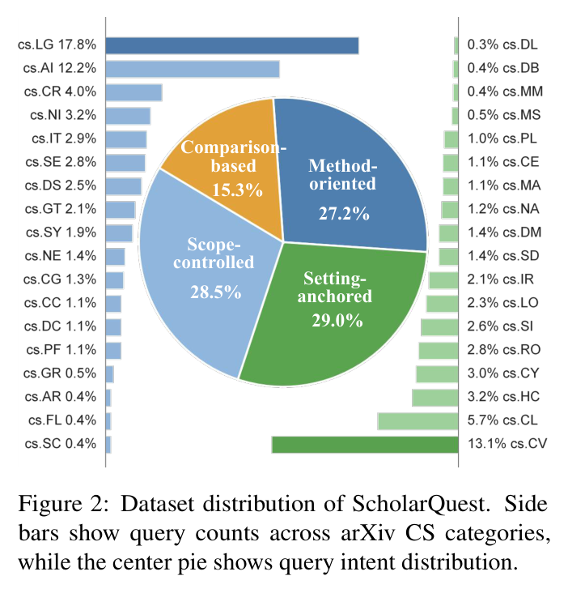
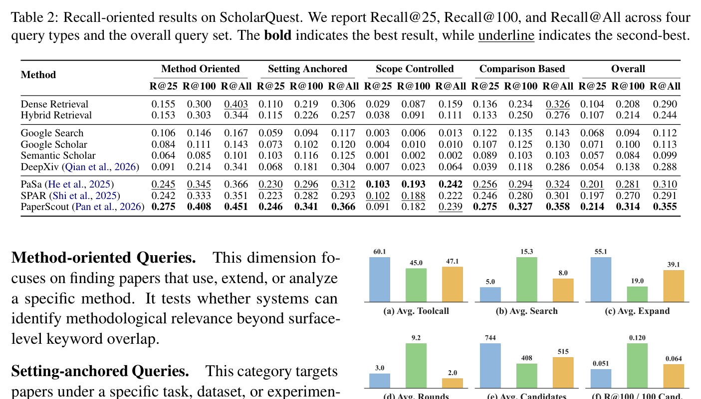
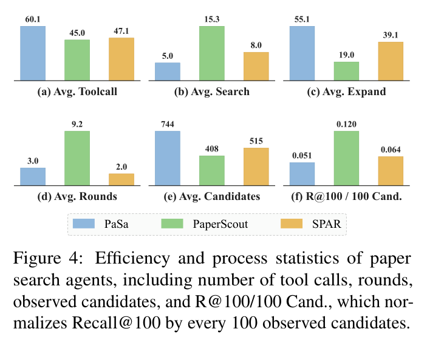
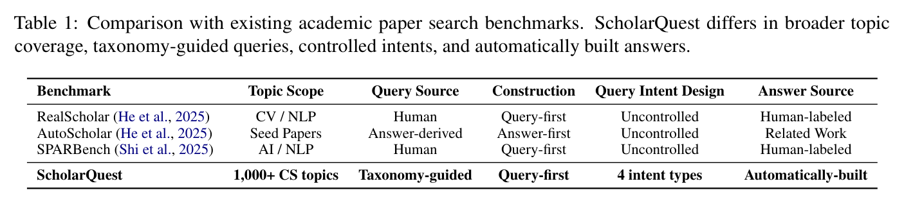

主指标
Recall@25 / Recall@100 / Recall@All。全文不报 precision、nDCG、F1 —— 纯召回口径。
1,111 条分类学引导的 CS 检索查询 —— 数据集本身可用，但"填补空白"的叙事建立在把领域写空之上。
一句话结论：这是一个可用的数据集配上一段不合格的相关工作。1,111 条查询、86.0% 严格匹配精度是实的，可以直接拿来测检索模块（但 κ=0.866 这个数不能照着读，见第 3 节）；而它声称"不存在"的标准化评测环境，至少有四篇先例，包括 ICLR 2026 的 AstaBench 和早它五个月、同一细分的 ScholarGym —— 全文 19 条参考文献里一篇都没有。三个贡献里：一个增量、一个已被逐组件做过（且同域有 2023 年 NeurIPS 的更严先例）、一个只剩"索引可自托管"这一窄条。
任务不是"找到那一篇"，而是把满足复合条件的论文尽量全部找出来。Agent 多轮调用检索工具，累积候选池 𝒫t，最后交一个排序列表与金标集 𝒫* 比对。金标集大小 5–200 篇 —— 这个量级决定了它考的是召回而非精度。

Recall@25 / Recall@100 / Recall@All。全文不报 precision、nDCG、F1 —— 纯召回口径。
交互轮数、search / expand 调用数、观察到的候选数，以及效率指标 R@100 每 100 个候选。
按 4 类意图分组；按金标集规模分 5 桶（5–25 / 26–50 / 51–100 / 101–150 / 151–200）。
需要说清楚的是，论文标题里的 "Taxonomy-Guided" 其实是两件不同的事被合成一个卖点：主题来自 ACM CCS 层级（1,638 个 CS 种子），意图是四类人为设定的正交标签。真正没有先例的是前者，后者有大量先例（见第 7 节）。

| 意图类型 | 占比 | 考什么 | 样例（附录 D） |
|---|---|---|---|
| Method-oriented | 27.2% | 方法层面相关，超越关键词重合 | "哪些论文用深度强化学习做视频摘要？"（cs.CV，11 篇金标） |
| Setting-anchored | 29.0% | 任务 / 数据集 / 实验设定的细粒度约束 | "医疗领域的隐私与安全问题、政策或隐私保护技术"（cs.CY，19 篇） |
| Scope-controlled | 28.5% | 检索广度控制，含否定 / 排除约束 | "软件维护工具，但排除静态分析工具"（cs.SE，12 篇） |
| Comparison-based | 15.3% | 跨对象的关系型意图 | "哪些论文报告迁移学习优于随机初始化？"（cs.LG，15 篇） |
答案集：每条查询 10 个 LLM 改写（method / task / broader / narrower / terminology 五种角度）→ Google serper + arXiv API + Semantic Scholar API 各取 top-10 → 引文图扩展（每个高置信种子最多 30 篇施引 + 全部参考文献，最多 2 跳，带噪声分支剪枝）→ 多 LLM 判官打 0/1/2 分，只留 Rel ≥ 2。单条查询上限 500 篇答案或 10,000 篇打分。
重要问题 —— 它对 PaSa 的批评反噬自己。§2.1 批评 AutoScholarQuery "tied to source papers and their Related Work section, which may inherit topic and citation biases"。但 ScholarQuest 自己的答案集正是靠引文图 2 跳扩展建的，这是同一族的引文偏置机制。§2 和 §6 Limitations 都没有触碰这个张力。

450 对查询–论文（三个分数组各 150），3 位博士专家，多数表决。
LLM↔人 Pearson 0.867 / Spearman 0.867 / 二次加权 κ 0.866。
score-2 组严格匹配 86.0%（129/150），宽松 98.7%。score-0 组仅 1/150 被人判为严格匹配。
标注者报酬 ≥ 当地最低工资 10 倍。这一节的做法（LLM 判相关 + 人工抽检 + 报一致性）本身不是方法贡献，2024 年起就是标准实践（Thomas et al. arXiv:2309.10621, SIGIR 2024；UMBRELA arXiv:2406.06519）。
重要问题 —— κ=0.866 高得不正常，别当卖点读。把它放回这个领域的统计基线里看：
合理推断 ScholarQuest 报的 0.866 比整条文献高出一个量级，最可能的原因有两个叠加：一是它用的是二次加权 κ（quadratic-weighted），在 3 档序数尺度上会系统性高于上面那些未加权 Cohen κ，二者不可直接比；二是它比的是 LLM 对三位专家多数表决后的裁决标签，等于把人–人分歧先消掉了 —— 对应 CSFCube 里"裁决后"那一档。所以这个数不能读成"标注质量远超同行"，只能读成"在它自己的口径下自洽"。要横向比较，需要它报未加权 Cohen κ 与人–人一致性，而论文两个都没报。
DORIS-MAE / Anno-GPT（arXiv:2310.04678, NeurIPS 2023 Datasets & Benchmarks）：同样是科学文献域，LLM 标注 165,144 对（aspect, abstract），人工验证用的是预先注册的假设检验 —— 开发集 90 对（调完 prompt 即冻结）、测试集 250 对 3 位 CS 研究生，bootstrap 95% CI，H₀ =「LLM–人一致性等于人–人一致性」，最终 macro-F1 64.17 vs 58.33（p=0.74）、accuracy 67.40 vs 64.13（p=0.41），全部 p > 0.05 故保留 H₀。
这比 ScholarQuest"报三个高相关系数"的做法严格得多：它显式地把"人–人一致性"作为对照基线，而不是让读者以为 0.866 是绝对好。而且它 2023 年就发在 NeurIPS D&B 上 —— ScholarQuest 未引。
审计发现 顺带一个对同类工作都成立的警告：目前最大规模的"人在环路"验证研究（TREC 2024 RAG，arXiv:2411.08275，301 主题 / 77 runs，含 NIST 作者）发现人工后编辑并没有提升与全人工评测的一致性，唯一确证收益是池子缩小 38–41%。所以人工抽检应当被论证为审计，而不是"提升了标签质量"。
环境建在 S2 PaperData / S2ORC 快照上，取有摘要的 arXiv 论文，"million-scale"（审计发现 确切篇数论文全程未给）。BM25 走 SQLite FTS5，稠密走 Qdrant + BGE-M3 的 title–abstract 向量，RRF 混合；对外是 RESTful API：语义检索、标题精确匹配、元数据查询、引文/参考文献遍历。
容易误解：repo 里没有叫 ScholarBase 的东西。后端在 Lewen-API/ 目录下，README 称之为 "Lewen API"（约 3M arXiv 论文，4000 端口）。名字不统一，但这个后端是可本地部署的 —— 见第 7 节，这恰好是它相对 AstaBench 唯一真实的差异点。

| 系统 | R@25 | R@100 | R@All | 备注 |
|---|---|---|---|---|
| Dense Retrieval (BGE-M3) | 0.104 | 0.208 | 0.290 | 非 agentic 参照 |
| Hybrid (BM25+dense, RRF) | 0.107 | 0.214 | 0.244 | 最强非 agentic |
| Google Scholar | 0.071 | 0.100 | 0.113 | |
| Semantic Scholar API | 0.057 | 0.084 | 0.099 | |
| DeepXiv (Qian et al. 2026) | 0.054 | 0.138 | 0.288 | R@25 全表最低，R@All 却接近 dense |
| PaSa | 0.201 | 0.281 | 0.310 | |
| SPAR | 0.197 | 0.270 | 0.291 | |
| PaperScout（作者自己的系统） | 0.214 | 0.314 | 0.355 | 全指标夺冠 |
它的 R@25 是全表最低（0.054），但 R@All 高达 0.288 —— 是其他外部 API 的 2.5 倍，几乎等于纯稠密检索的 0.290。翻译成人话：它的 agent 确实把金标论文捞上来了不少，但排序极差，好东西全埋在 25 名之后。对一个主打"给 agent 用的数据接口"的系统，这个 profile 相当致命，因为 agent 的上下文装不下 300 篇。审计发现 论文对这个反差一个字都没分析。

其他值得记住的数字：scope-controlled 是所有系统的共同灾难 —— PaSa/SPAR/PaperScout 的 R@100 分别只有 0.193/0.188/0.182，Google Search 0.006、Semantic Scholar API 0.002、DeepXiv 的 R@25 是 0.007。零召回失败 20/1,111（1.80%），但失败时 agent 平均仍看了 894.6 / 612.9 / 408.0 个候选 —— 论文的判断是"failures are not due to a lack of search effort, but to off-target exploration"。
容易误解：全文没有 LLM 骨干的消融。它自己 pipeline 里唯一点名的模型是 Qwen3-Max（主题映射、查询生成、改写、判相关全用它）—— 也就是说数据集的意图分布和相关性标准，都带着单一模型的偏好。
§2 全节只有两段。这不是概括，是字面事实。
三个连续的让步–转折句，句式完全一致：
"AutoScholarQuery provides useful scale, but its construction is tied to source papers and their Related Work section, which may inherit topic and citation biases."
"RealScholarQuery improves realism, but its limited size makes it difficult to systematically cover fine-grained CS topics and diverse query intents."
"SPARBench further improves annotation quality …, but it remains small-scale with broad domain coverage rather than a systematic CS topic hierarchy."
审计发现 "small-scale" / "limited size" 全程没有给出任何数字。竞品的查询规模在论文里从未写出，Table 1 也没有 scale 列 —— 一个最容易补、也最该补的数。

PaSa → SPAR → PaperScout，三句递进，一句 "ScholarQuest complements them by…" 收尾。整节没有一个 "but"，没有任何 gap claim。而 benchmark 论文里 §2.2 的职责本该是论证"这些 agent 需要更好的评测"—— 它一点这个活儿没干。
"Academic paper search is essential for both human researchers and deep-search agents…" 后面挂了三个引用，三篇在全文各只出现一次，从未被描述、比较或复引：
最浪费的一个引用。它本身就是科学文献 agent 的评测 benchmark，作者组还高度重叠（Daoyu Wang、Mingyue Cheng、Qi Liu），却被塞在一个从句里 —— 没进 Table 1，没进 gap 分析。
自引，做的是商业报告生成。全文唯一出现 "deep research" 字样的地方，就是这篇的标题里。
既不是 benchmark 也不是论文检索系统，是个 RL 训练方法。
对全文与参考文献做了字符串检索，以下全部零命中：
其中"通用 deep-research"那一类是最显眼的缺口 —— ScholarQuest 的第三个贡献是给 agent 的冻结工具环境，而"标准化 sandbox"这套规范正是在那片文献里立起来的。
全文参考文献共 19 条，其中 6 条是 Pearson / Spearman / Cohen / BM25 / RRF / S2ORC 这类工具引用，3 条是上面的凑数引用。
净效果：§2.1 把"相关工作"定义成恰好就是它拿来当 baseline 打的那两篇，让整个领域看起来比实际空旷得多。
下面的判断基于对先行工作的独立核查（不读本文的情况下先摸清已有版图），再回头对齐。
拆成两半，结论不同。
意图分型不新，而且已有工作做得更细。AstaBench 的 PaperFindingBench（arXiv:2510.21652，ICLR 2026）有明确的三类查询分型（48 navigational / 43 metadata / 242 semantic），并且在 semantic 内部再枚举挑战类型：多重条件、条件间复杂关系、罕见术语、错误术语、主张之外的细节、干扰性背景信息。SPAR 的 agent 内部分 survey / recent advances / methodological comparison；LitSearch 有 2 级 specificity；IFIR（NAACL 2025）有 3 级指令复杂度。
"scope-controlled" 基本是换个名字。带排除 / 否定约束的检索是有专门 benchmark 的成熟子领域：NevIR（2305.07614）、ExcluIR（2404.17288，3,452 条人工标注排除型查询 + 70,293 训练查询，自称首个排除型文档检索研究）、InstructIR（2402.14334）、FollowIR（2403.15246）、IFIR（2503.04644，科学文献子集建在 SciFact-open 上）。AstaBench 的 metadata 查询里也已明确含否定（"not citing the transformers paper"）并支持嵌套递归。ScholarQuest 视为"最难、所有系统都崩"的那一档，恰是文献里研究得最久的一档，而这些工作一篇都没引。
此前的 benchmark 都是机会采样 —— PaSa 从 5 个会议的 related work、LitSearch 从 ACL/ICLR 行内引用、SPARBench 从 50 个手工种子、AstaBench 从产品使用日志、DORIS-MAE 明确说是"随机采样摘要"。独立核查（OpenAlex 全文检索）显示，用 ACM CCS 的相关工作只有四篇：TaxoIndex（2410.19218）、CCQGen（2502.11181, WSDM 2025）、Academic Concept Index（2601.00567）、以及 ScholarQuest 自己 —— 而前三篇实际用的是微软学术 field-of-study 分类（431,416 节点），ACM CCS 只在脚注里被当例子提到，且它们的种子单位是文档而非分类节点，所以不构成分层抽样框。
合理推断 但两个折扣：一是这条结论受限于 OpenAlex 全文覆盖，2010 年前的 JCDL/ECDL 数字图书馆测试集可能有先例而未被检出；二是它属于覆盖度贡献，不是新的评测能力，而且逐节点覆盖度账没报（见第 3 节）。
这是最弱的一条。
| 组件 | 先例 |
|---|---|
| 多路召回池化 | PaSa RealScholarQuery 池化 5 个系统；SPARBench 4 个 API → 198K 候选 |
| 级联 LLM 判相关 | SPARBench：Qwen2.5-7B → 3K → Qwen2.5-72B → 2K → 人工 → 560 |
| 引文图扩展进池 | PaSa 的 [Expand]（消融显示去掉掉 22.98%/32.21% recall）；RollingEval-Jun25 广度优先沿参考文献扩展 |
| LLM 生成标准 + 人工抽检一部分 | AstaBench：LLM 生成加权相关性标准，人工校验 1/5 的查询 —— 与本文 450 对抽检完全同构的设计 |
| LLM-as-relevance-judge 本身 | Thomas et al.（2309.10621, Bing）、UMBRELA（2406.06519）—— 2024 年起即标准做法 |
唯一站得住的说法是"全自动化解除了人工瓶颈"（SPARBench 卡在 50 query / 560 doc，RealScholarQuery 卡在 50 query）。这是纯规模论证，而且它背着一个反向风险：RollingEval-Jun25（本地归档，比 ScholarQuest 早一个月）专门论证"拿参考文献列表当金标做单轴 recall 评测"不可靠 —— 人类引用里只有 51% 被判为中度以上相关，而 AI reranker 是 86–88%。
§1 的原话是 "existing benchmarks do not provide a publicly available and standardized evaluation environment"。这句话在 2026 年 6 月已经站不住：
| 先行工作 | 时间 | 做了什么 | 可下载？ |
|---|---|---|---|
| BrowseComp-Plus 2508.06600 | 2025-08 | 100,195 篇固定语料 + 830 条查询，人工核验支撑文档 + 挖掘的 hard negatives；BM25 (Pyserini) + 4 个稠密检索器。目的正是把检索器质量与 agent 质量解耦。 | 是（HF Tevatron/browsecomp-plus）· 通用域非学术 |
| AstaBench 2510.21652 | 2025-10 ICLR 2026 | Asta Scientific Corpus，原话 "first production-grade, reproducible search tools for agents"；日期截断 + MCP 8 工具 + leaderboard + Inspect 框架 + 22 类 57 agent。 | 否，托管 API（本地精读） |
| ScholarGym 2601.21654 | 2026-01 (v3 02-17) | 同一个细分、早五个月：570K arXiv 论文静态语料（CS+物理+数学，聚合自 PaSa 与 LitSearch 查询集、按 arXiv ID 去重）+ 确定性检索（BM25 over title+abstract；稠密 Qwen3-Embedding-0.6B in Qdrant）+ 2,536 条专家标注查询。立论都一样："isolate algorithmic reasoning from live API variance"。 | 未找到发布地址 |
| SAGE 2602.05975 | 2026-02 | 200,000 篇开放获取全文冻结语料（4 领域 × 5 万）+ 1,200 条查询。附带一个直接可用的结论：BM25 比 LLM 检索器高约 30%，因为 agent 发出的子查询偏关键词式。 | 部分（仓库只有查询） |
审计发现 这四篇 ScholarQuest 一篇都没引。尤其 ScholarGym 与它同细分、早五个月、连"用确定性检索隔离线上 API 波动"的动机都一致。
Asta 的语料不可自托管、不可下载。它是 asta-tools.allen.ai/mcp/v1 上的托管服务，需申请 ASTA_TOOL_KEY，限流约 4 req/s，走一份非商用、不可转授、可随时撤销的 Corpus Tool License（明确禁止 "copy, adapt, reformat, reverse-engineer … its corpus and underlying contents therein"），且论文从未披露语料规模、也没有索引快照版本号。它的"可复现"是时间意义上的（日期截断使结果不随新论文漂移），不是基础设施意义上的 —— Ai2 关掉端点或换索引，历史数字就无法复核。
ScholarQuest 的 Lewen API 是可以本地起的（SQLite FTS5 + Qdrant，约 3M 论文）。这是真实但很窄的工程差异，不是概念创新 —— 而且它自己在论文里叫 ScholarBase、repo 里叫 Lewen API，连名字都没统一，等于把唯一的差异点也埋掉了。
PaperScout（arXiv:2601.10029）与本文共享五位作者，包括同一个一作 Tingyue Pan。但全文以纯第三人称介绍它：
§2.2: "Building on this line of work, PaperScout improves tool-use autonomy by enabling the agent to decide when and how to invoke search and expansion actions according to the evolving search state (Pan et al., 2026)."
§4.1: "The third group includes open-source agentic paper search systems, including PaSa, SPAR, and PaperScout (Pan et al., 2026)."
审计发现 检索 "our previous" / "our prior" / "we previously" / "in our earlier" —— 零命中。
为什么这重要：PaperScout 赢下了所有头条指标（R@100 0.314、R@All 0.355、效率 0.120、五个规模分桶全胜）。而论文给它获胜的解释是纯推测且明显有利的 —— §4.2 "One possible explanation is that more adaptive multi-turn search can help agents better navigate scattered literature evidence"；§4.3 "This efficiency advantage may stem from its autonomous tool-use policy."。加上 §2.2 那句 "Building on this line of work" 把自家系统摆在领域顶点。
这不构成学术不端（引用如实标了 Pan et al. 2026），但"自建 benchmark + 自家系统夺冠 + 不披露关系 + 用推测性语言解释为何夺冠"这个组合，是审稿人一定会点出来的。引用 PaperScout 那一行的数字时应当打折。
合理推断 对称地说一句公道话：AstaBench 也有类似问题 —— 它的头名 Asta v0 在自己定义的工具规范里属于 "Fully custom"，不满足最严格的 Standard 档；PaperFindingBench 的召回分母还是用自家 PaperFinder 的宽松消融跑出来的并集估的。自建 benchmark 自家夺冠是这个子领域的通病，不是某一家的问题。
datasets/ScholarQuest.jsonl（1,111 条，答案集限定 5–200 篇）+ datasets/query_metadata.jsonl（13,097 条过滤前记录）。可直接跑；但不要转述它的 κ=0.866（口径问题见第 3 节），要报质量就自己抽一批重标。
所有现有系统在这一档 R@25 ≈ 0.01。如果要找可发力的缝隙，这是最明显的一个 —— 但先去读 ExcluIR / NevIR，别重复造轮子。
要引"agentic 论文检索的评测现状"，应引 AstaBench（ICLR 2026，环境 + leaderboard + 57 agent 齐全）。ScholarQuest 只宜作为"CS 细粒度意图的补充数据集"并列提及。
若自己的工作里有"用论文参考文献列表当检索金标"的设计，RollingEval-Jun25 的 51% vs 86–88% 会被审稿人拿来打。提前知道。
证据等级说明。本页 论文声称 项均来自 arXiv HTML 全文（含附录 A–E、Table 1–11）与本地 PDF 原图核对；可直接用 项来自 GitHub 仓库文件清单；审计发现 项为对全文 + 参考文献做字符串检索后的缺失/矛盾认定；合理推断 项为跨论文比较得出、论文本身未言明。先行工作版图经独立核查（arXiv API + OpenAlex + Semantic Scholar API），未能覆盖 Google Scholar 与 2010 年前非 arXiv 文献，这是本页新颖性判断的主要盲区。
归档日期：2026-08-03 · 论文版本 v1（2026-06-18）· 全部图片由本地 PDF 按图注区域裁切，见 assets/。